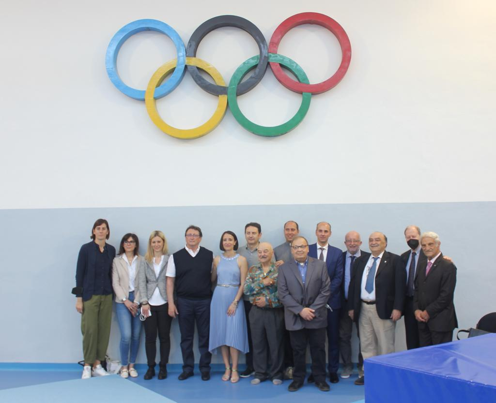

Oltre cinquant'anni di ginnastica artistica a Meda.
L'A.S.D. GINNASTICA MEDA è un'associazione sportiva senza fini di lucro, affiliata alla Federazione Ginnastica d'Italia, che opera nel settore della ginnastica artistica da oltre quarant'anni, precisamente dal 1973, con il progetto di sviluppare il lavoro di alta specializzazione per formare ginnasti e ginnaste capaci di confrontarsi agonisticamente ai massimi livelli nelle competizioni internazionali.
Parallelamente all'agonismo, il programma, in linea con il mandato statutario di promozione dell'attività sportiva, non tralascia l'insegnamento della ginnastica di base, rivolta a bambini e ragazzi a partire dai quattro anni.
La palestra è stata individuata dalla FGI nel 1986 come Centro Federale di Alta Specializzazione, con guida affidata a Maurizio Allievi, Direttore Tecnico dell'associazione e Responsabile Nazionale delle squadre maschili junior e senior.
Dal 1992, anno del primo scudetto in Serie C, il settore maschile ha costruito una costante ascesa nazionale e internazionale (Europei, Mondiali, Coppa del Mondo, Olimpiadi), arrivando a costituire per un decennio circa i due terzi della squadra maschile italiana senior. L'apice è la medaglia d'oro olimpica di Igor Cassina alla sbarra ad Atene 2004.
Una tradizione lunga oltre cinquant'anni, al servizio di atleti e territorio.
